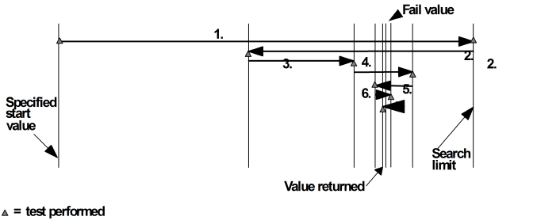

Binary Search Algorithm
The binary search algorithm uses a constantly reducing search region to limit the number of measurements required for each search.
This is illustrated in the figure below.

The search for the fail/pass transition point begins by testing at the predefined limits of the search region and then if a pass/fail transition is found it continues. By halving the distance between limits it produces a new limit where it performs a test. If a transition is found it reverses the direction again halving the distance to the limit before performing another test. If no transition is detected it continues in the same direction and halves the distance to the limit where it performs another test. It continues in this manner until it reaches the resolution of the parameter. The pass value closest to the transition is returned.
If the first pair of results, for the search limits, are pass/pass or fail/fail then the search is discontinued and an error is reported.
This search method needs less steps than a linear search and so it is faster. It also detects the transition value using the highest resolution.